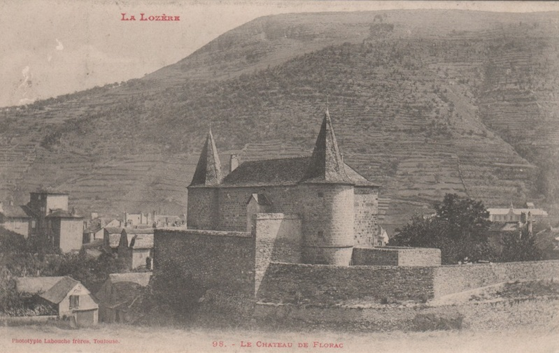
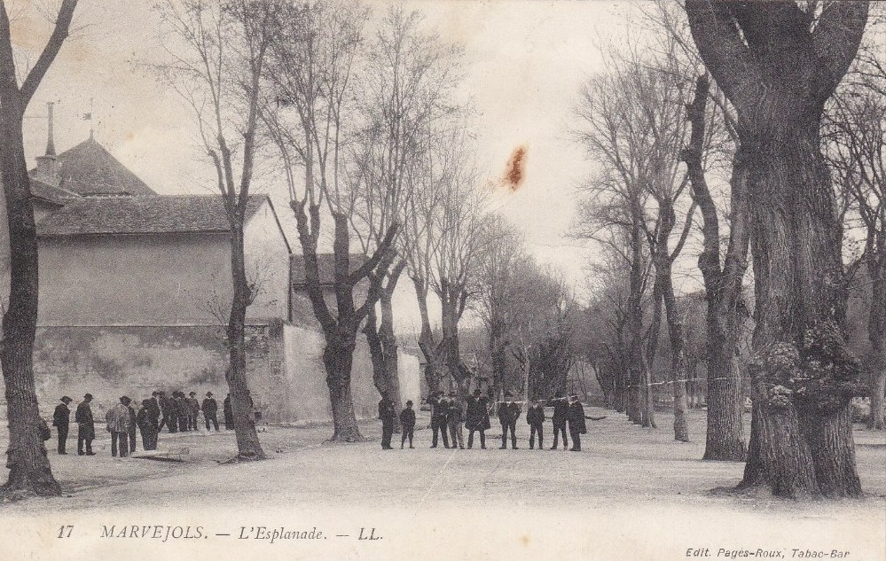
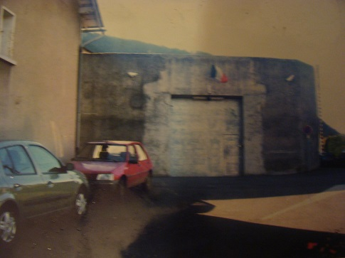
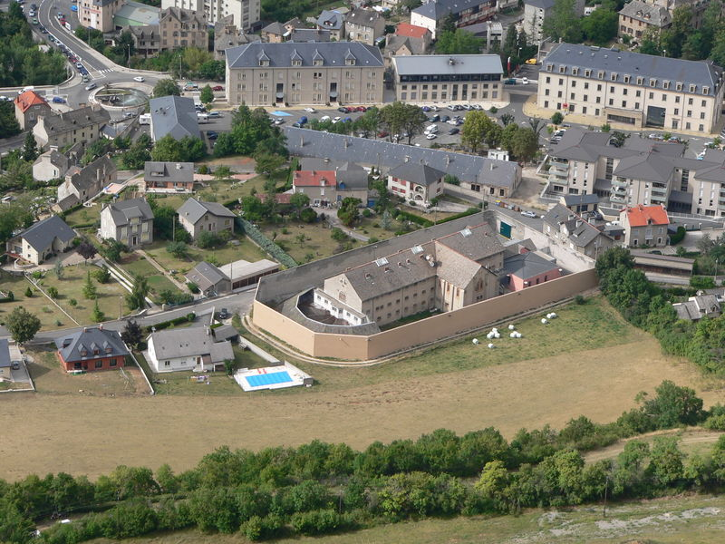

| Département | Images | Ville | Nom | Adresse | Période | Capacité | Histoire du lieu | Nombre d'exécutions |
| Lozère (48) |  |
Florac | Château de Florac | 6 bis, place du Palais | 1810-1926 | Construit en 1652 sur les ruines de l'ancien château féodal des barons d'Anduze, détruit pendant les guerres de religion, le nouveau château n'aura de rôle seigneural que pendant 140 ans. Epargné par la Révolution, il est transformé en grenier à sel, puis vendu à l'Etat sous Napoléon et transformé en maison d'arrêt pour plus d'un siècle. Cinquante ans après sa fermeture, et bien qu'il conserve les traces de son passé judiciaire, tels que les portes de cellules ou les fenêtres barrées, le château a trouvé une nouvelle jeunesse en devenant le siège du Parc national des Cévennes, et en accueillant une exposition permanente. | Aucune exécution | |
| Lozère (48) |  |
Marvejols | Maison d'arrêt | Esplanade | -1926 | Aucune exécution | ||
| Lozère (48) |   |
Mende | Prison Séjalan | 37, chemin de Séjalan | En service depuis 1891. | 68 places (1962) 45 places (2015) |
Quartier de Haute Sécurité, jusqu'en 1981, elle a une des pires réputations des maisons d'arrêt de France. | Une exécution en 1948. |
{kind=link}
{kind=link}
{kind=link}
{kind=link}